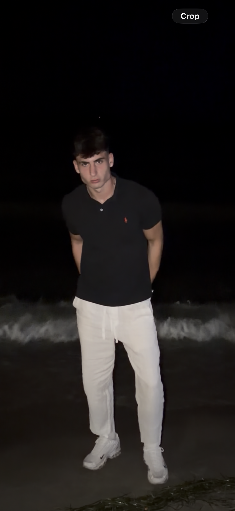

NN
Gulyás Nimród
Backend fejlesztő, társalapító
Az adatbázisokért és a szerveroldali logikáért felel. Szereti, ha egy lekérdezés elfér egy képernyőn. Szabadidejében szeret horgászni, szerencsejátékozni.
Ketten alapítottuk a céget, mert elegünk lett az olyan rendszerekből, amiket senki nem mer megnyitni(unatkoztunk). Azóta is ketten fejlesztünk(próbálkozunk).

Cím: 6100 Kiskunfélegyháza, Kossuth utca 2-4.
E-mail: nimlyaki@gmail.com
Telefon: +36 76 123 456
Nyitvatartás: hétfőtől péntekig 9:00–17:00
NN
Backend fejlesztő, társalapító
Az adatbázisokért és a szerveroldali logikáért felel. Szereti, ha egy lekérdezés elfér egy képernyőn. Szabadidejében szeret horgászni, szerencsejátékozni.
NK
Frontend fejlesztő, társalapító
A felhasználói felületeket tervezi és készíti. Az akadálymentesség nála nem utólagos feladat. Szabadidejében focizik, edzeni jár.